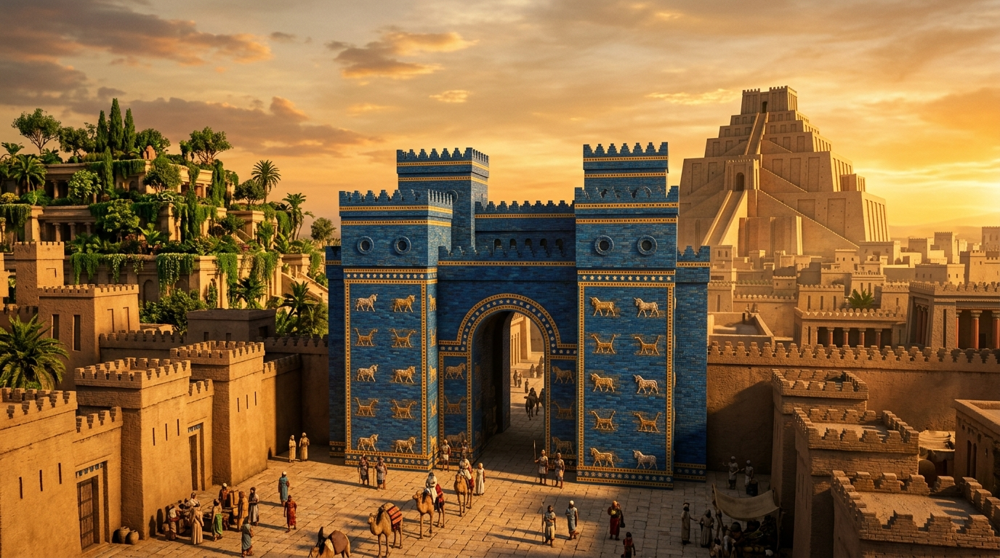

O Esplendor da Caldeia e o Exílio Purificador de Judá
Após o enfraquecimento e a queda sangrenta da Assíria, o Império Neobabilônico (ou Caldeu) preencheu o vácuo de poder e ergueu-se como a joia indiscutível do mundo antigo. Sob a liderança obstinada e genial do rei Nabucodonosor II, a Babilônia transmutou-se de uma antiga cidade ribeirinha em uma metrópole de proporções lendárias, ostentando obras monumentais como os Jardins Suspensos, os gigantescos zigurates (templos em degraus) e as espessas muralhas duplas que pareciam inexpugnáveis. No entanto, para os escritores bíblicos, o esplendor babilônico era apenas a máscara de um império que Deus usaria como uma "taça de ouro" para derramar o Seu juízo severo e definitivo sobre a idolatria empedernida do Reino de Judá.
1. A Primeira Deportação e a Batalha pela Identidade
O confronto direto entre Jerusalém e Babilônia iniciou-se em 605 a.C., quando Nabucodonosor, após derrotar os egípcios, marchou contra Judá e exigiu total submissão. Para garantir a lealdade do rei judaico e sangrar a nação de sua futura liderança, Nabucodonosor implementou uma tática imperial astuta: deportou a elite intelectual e a linhagem real para a capital caldeia. Entre esses cativos estavam os jovens Daniel, Hananias, Misael e Azarias.
No coração da corte babilônica, esses jovens não enfrentaram logo fornalhas ou leões, mas uma fornalha muito mais sutil: o processo de aculturação. Foram inseridos num rigoroso programa de reeducação de três anos, aprendendo a complexa língua, a astrologia e a literatura dos caldeus, e recebendo novos nomes que honravam deuses pagãos (Beltessazar, Sadraque, Mesaque e Abede-Nego). O objetivo era desconstruir a teologia de Israel e moldar burocratas leais ao império. A recusa desses jovens em se contaminar com a comida sacrificada do rei representou a primeira grande vitória espiritual do exílio: a resistência pacífica de quem sabia que sua identidade não era definida pelo império, mas pela aliança com Yahweh.
2. A Ruína de Jerusalém e a Queda do Templo (586 a.C.)
Apesar dos repetidos avisos do profeta Jeremias — que alertava ser inútil resistir ao juízo divino e aconselhava a rendição pacífica —, os últimos reis de Judá preferiram dar ouvidos a falsos profetas e a falsas promessas de socorro militar do Egito. As constantes rebeliões esgotaram a paciência de Nabucodonosor, que enviou seu exército para um cerco total e asfixiante a Jerusalém, durando quase dois anos.
O ano de 586 a.C. marcou o evento mais traumático do Antigo Testamento. A fome dentro das muralhas chegou a níveis indescritíveis. Quando as defesas finalmente cederam, os soldados babilônicos não mostraram misericórdia. O impensável aconteceu: o magnífico Templo construído por Salomão, considerado o "estrado dos pés" de Deus na Terra, foi saqueado, despojado de seu ouro e bronze, e totalmente incendiado. Os muros de Jerusalém foram derrubados, as casas dos nobres queimadas, e a maioria absoluta da população sobrevivente foi arrastada, em marchas forçadas e humilhantes, para o cativeiro na Mesopotâmia.
3. O Crisol do Exílio: A Cura da Idolatria
"Junto aos rios da Babilônia, nos assentamos e choramos, lembrando-nos de Sião" (Sl 137). Longe de sua terra, desprovidos de rei, cidade e santuário, os judeus exilados mergulharam em uma profunda crise existencial e teológica. Foi nesse cenário de dor, onde as harpas foram penduradas nos salgueiros, que o milagre da preservação ocorreu.
Sob o pastoreio visionário do profeta Ezequiel e as palavras de consolo de Isaías, o exílio atuou como um fogo purificador. Sem o templo físico para realizar sacrifícios, a espiritualidade judaica passou por uma transformação radical: o foco voltou-se intensamente para a leitura dos rolos sagrados, para o arrependimento nacional, a oração e a estrita observância do sábado como marcador de identidade. Essa mudança lançou as bases para a criação das sinagogas e curou permanentemente a nação do politeísmo e da idolatria que os havia levado à ruína. O exílio provou que Yahweh não era um deus territorial derrotado, mas o Senhor soberano de toda a terra.
4. A Loucura do Rei e a Balança da Justiça Divina
Embora o Império Babilônico tenha servido como ferramenta disciplinar nas mãos de Deus, sua arrogância não ficou impune. O livro de Daniel registra a humilhação do próprio Nabucodonosor, que, em seu auge, gabou-se: "Não é esta a grande Babilônia que eu edifiquei para a casa real, com o meu grandioso poder?". Por sua soberba, ele sofreu de licantropia clínica, perdendo a razão e vivendo como um animal até reconhecer a soberania do Altíssimo.
A queda definitiva do império chegou de forma abrupta em 539 a.C., durante o reinado de Belsazar. Em meio a um banquete profano, onde os cálices sagrados do templo de Jerusalém eram usados para brindar a deuses de pedra e metal, a misteriosa escritura na parede decretou o fim: "Mene, Mene, Tequel, Parsim" — pesado, avaliado e achado em falta. Naquela mesma noite, os exércitos medo-persas, sob o comando de Ciro, desviaram as águas do rio Eufrates e invadiram a cidade sem enfrentar resistência significativa, encerrando o domínio da Babilônia de ouro e abrindo os portões para o fim do cativeiro judaico.
Continue sua jornada:
- Voltar ⬅️ Ver todos os impérios
- Temas 📚 Ver todos os estudos
Apoie este projeto 🌱
Se este estudo foi útil, considere apoiar a manutenção do site.
Chave PIX (Celular):
marcosmontanaria@gmail.com